VMware Horizon 6 - Master Virtual Desktop
Use this post to build a virtual desktop that will be used as the parent image or source image for additional virtual desktops.
Navigation
- Hardware
- Windows
- Install Applications
- Antivirus
- Horizon 6 Agent
- VMware OS Optimization Tool :idea:
- Snapshot
:idea: = Recently Updated
Hardware
- The virtual desktop pools will use the same hardware specs (e.g. vCPUs, memory size, network label) specified on the master virtual desktop. Adjust accordingly.
- Set Memory as desired.
- For New Hard disk, consider setting Thin provision.
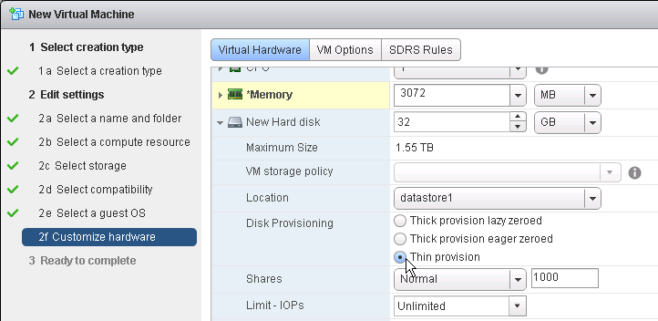
- Make sure the virtual desktop is using a SCSI controller.
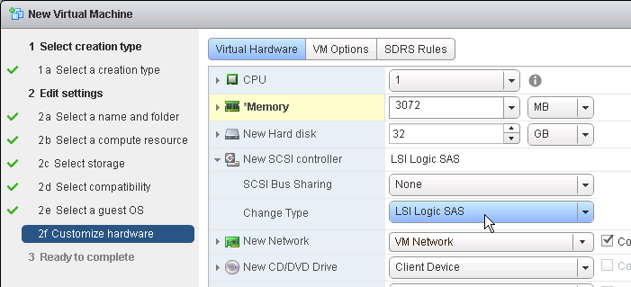
- The master virtual desktop should be configured with a VMXNET 3 network adapter.
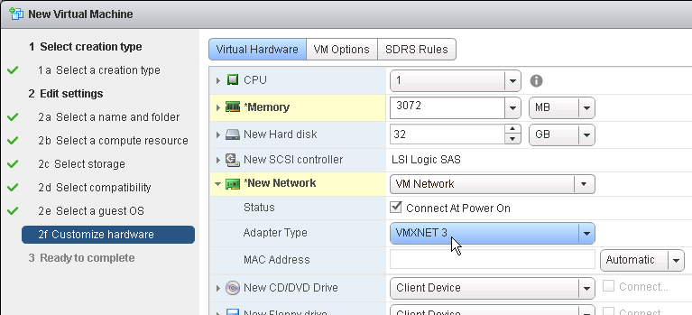
- When building the master virtual desktop, you will probably boot from an ISO.
- Before using View Administrator to create a pool, ensure the CD/DVD drive points to Client Device and is not Connected. The important part is to make sure ISO file is not configured.
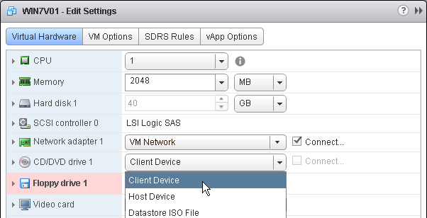
- There’s no need for the Floppy drive so remove it.
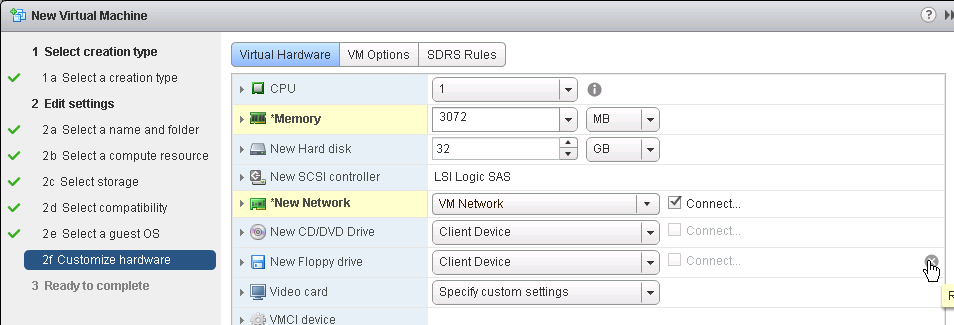
- If you have any Serial ports, remove them.
- In Device Manager, after installing VMware Tools, make sure the video driver is VMware SVGA 3D.
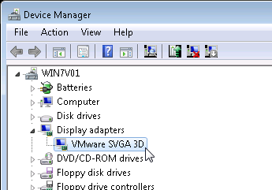
- If not, you can use the driver at C:\Program Files\Common Files\VMware\Drivers\video_wddm.
Windows
Operating System Selection
As of Horizon 6.2, Windows 10 is supported. However, Multimedia Redirection is not supported.
Preparation
- Partition Alignment. For Windows XP, make sure the partition is aligned. You’ll need to create and partition the disk in advance on another virtual machine and set the partition offset. create partition primary align=1024. Windows 7 doesn’t have this problem.
- VMware Tools. Install the latest version of VMware Tools and Guest Introspection (formerly known as vShield Endpoint) Driver prior to installing the Horizon 6 Agent.
- Teradici Audio Driver - https://techsupport.teradici.com/link/portal/15134/15164/Article/1434/Teradici-Virtual-Audio-Driver-1-2-0-Release-Details-15134-1434
- For the AppVolumes Agent and Imprivata OneSign agent (if applicable), don’t install them until Horizon 6 Agent is installed.
Windows 7 Networking Hotfix
- Ensure the vSphere network port group allows a sufficient number of connected virtual machines.
- Make sure Windows 7 Service Pack 1 is installed.
- Download hotfix 2550978 from http://support.microsoft.com/kb/2550978.
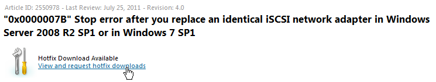
- Run Windows6-1-KB2550978.msu.
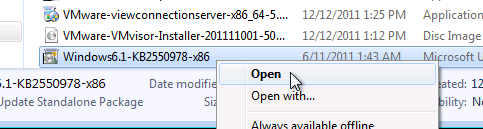
- Click Yes when asked to install the hotfix.
- Click Restart Now.
Follow http://support.microsoft.com/kb/315539 to delete ghost NICs
For desktop VMs using VMXnet3 NICs, you can significantly improve the peak video playback performance of your View desktop by simply setting the following registry setting to the value recommended by Microsoft:
HKLM\System\CurrentControlSet\Services\Afd\Parameters\FastSendDatagramThreshold to 1500
[As discussed in a Microsoft KB article http://support.microsoft.com/kb/235257]
Black Screen Hotfix
VMware 2073945 - Reconnecting to the VDI desktop with PCoIP displays a black screen: Request and Install Microsoft hotfix 2578159: The logon process stops responding in Windows.
Power Options
- Run Power Options. In Windows 8 and newer, right-click the Start Menu to access Power Options.
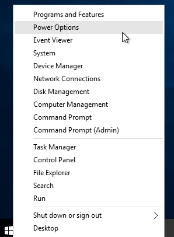
- Click the arrow to show more plans and select High performance.
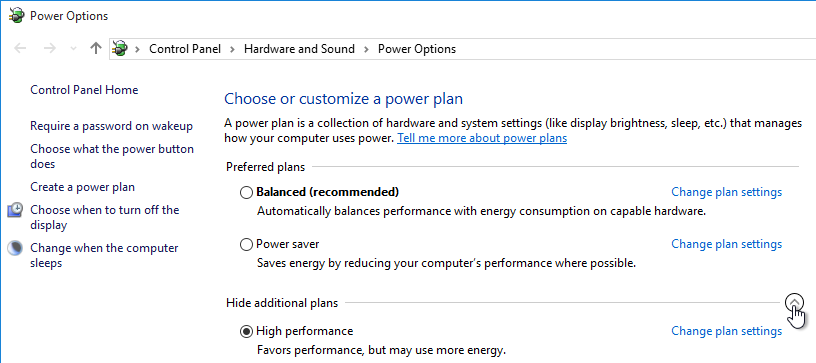
- Next to High performance, click Change plan settings.
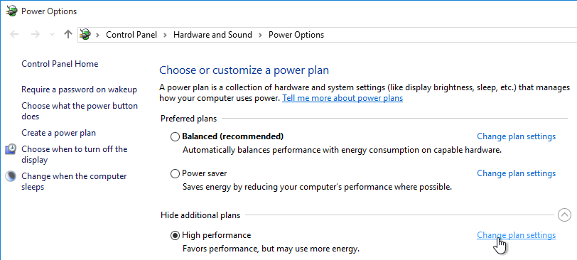
- Change the selection for Turn off the display to Never and click Save changes.
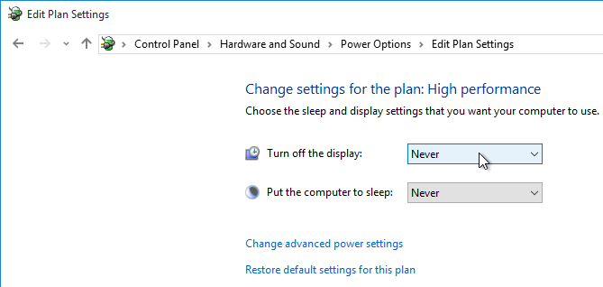
System Settings
- Domain Join. For linked clones, join the machine to the domain.

- In System control panel applet (right-click the Start Menu > System), click Remote settings.
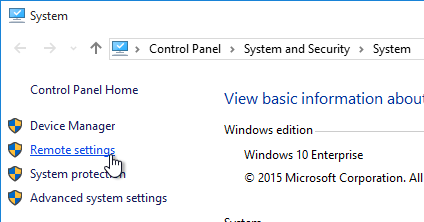
- Enable Remote Desktop.

- Activate Windows with a KMS license if not already activated. Note: only KMS is supported with View Composer.
Windows Profiles v3/v4 Hotfix
Roaming user profiles are tied to the operating system version so profiles on Windows 8.1-based, Windows 10-based, or Windows Server 2012 R2-based computers are incompatible with roaming user profiles in earlier versions of Windows.
Profiles are compatible only between the following client and server operating system pairs:
- Windows 10 and Windows Server 2016
- Windows 8.1 and Windows Server 2012 R2
- Windows 8 and Windows Server 2012
- Windows 7 and Windows Server 2008 R2
- Windows Vista and Windows Server 2008
If Windows 8, install hotfix http://support.microsoft.com/kb/2887239.
If Windows 8.1, ensure update rollup 2887595 is installed. http://support.microsoft.com/kb/2890783
After you apply this update, you must create a registry key before you restart the computer.
- Run regedit.
-
Locate and then tap or click the following registry subkey:
HKEY_LOCAL_MACHINE\System\CurrentControlset\Services\ProfSvc\Parameters
-
On the Edit menu, point to New, and then tap or click DWORD Value.
- Type UseProfilePathExtensionVersion.
- Press and hold or right-click UseProfilePathExtensionVersion, and then tap or click Modify.
- In the Value data box, type 1, and then tap or click OK.
- Exit Registry Editor.
After you configure the UseProfilePathExtensionVersion registry entry, you have to restart the computer. Then, Windows 8.1 creates a user profile and appends the suffix ".v4" to the profile folder name to differentiate it from version 2 of the profile in Windows 7 and version 3 of the profile in Windows 8. Then, Windows 8.1-based computers that have update rollup 2887595 installed and the UseProfilePathExtensionVersion registry entry configured use version 4 of the profile.
Windows 8 creates a new copy of the user profile and appends the suffix ".v3" in the profile folder name to differentiate it from the original version 2 profile for Windows 7. After that, Windows 8-based computers that have this hotfix installed and the UseProfilePathExtensionVersion registry entry configured use the version 3 profile for users.
Install Applications
Install applications locally if you want them to be available on all virtual desktops created based on this master virtual desktop.
Or you can use a Layering product (e.g. VMware App Volumes, Unidesk) or App Streaming (e.g. ThinApp, Microsoft App-V).
Antivirus
Microsoft’s virus scanning recommendations (e.g. exclude group policy files) - http://support.microsoft.com/kb/822158.
Anti-Virus Practices for VMware View - http://www.vmware.com/files/pdf/VMware-View-AntiVirusPractices-TN-EN.pdf
Sophos
Best Practice for running Sophos on virtual systems - http://www.sophos.com/en-us/support/knowledgebase/110507.aspx and Sophos Anti-Virus for Windows 2000+: incorporating current versions in a disk image, including for use with cloned virtual machines - http://www.sophos.com/en-us/support/knowledgebase/12561.aspx
Symantec
Best practices for virtualization with Symantec Endpoint Protection 12.1, 12.1 RU1, and 12.1 RU1 MP1 - http://www.symantec.com/business/support/index?page=content&id=TECH173650
Symantec Endpoint Protection 12.1 - Non-persistent Virtualization Best Practices - http://www.symantec.com/business/support/index?page=content&id=TECH180229
How to prepare a Symantec Endpoint Protection 12.1 client for cloning - http://www.symantec.com/business/support/index?page=content&id=HOWTO54706
Non-persistent desktops:
After you have installed the Symantec Endpoint Protection client and disabled Tamper Protection, open the registry editor on the base image.
- Navigate to HKEY_LOCAL_MACHINE\SOFTWARE\Symantec\Symantec Endpoint Protection\SMC\.
- Create a new key named Virtualization.
- Under Virtualization, create a key of type DWORD named IsNPVDIClient and set it to a value of 1.
To configure the purge interval for offline non-persistent VDI clients:
- In the Symantec Endpoint Protection Manager console, on the Admin page, click Domains.
- In the Domains tree, click the desired domain.
- Under Tasks, click Edit Domain Properties.
- On the Edit Domain Properties > General tab, check the Delete non-persistent VDI clients that have not connected for specified time checkbox and change the days value to the desired number. The Delete clients that have not connected for specified time option must be checked to access the option for offline non-persistent VDI clients.
- Click OK.
Make the following changes to the Communications Settings policy:
- Configure clients to download policies and content in Pull mode
- Disable the option to Learn applications that run on the client computers
- Set the Heartbeat Interval to no less than one hour
- Enable Download Randomization, set the Randomization window for 4 hours
Make the following changes to the Virus and Spyware Protection policy:
- Disable all scheduled scans
- Disable the option to "Allow startup scans to run when users log on" (This is disabled by default)
- Disable the option to "Run an ActiveScan when new definitions Arrive"
Avoid using features like application learning which send information to the SEPM and rely on client state to optimize traffic flow
Linked clones:
To configure Symantec Endpoint Protection to use Virtual Image Exception to bypass the scanning of base image files
- On the console, open the appropriate Virus and Spyware Protection policy.
- Under Advanced Options, click Miscellaneous.
- On the Virtual Images tab, check the options that you want to enable.
- Click OK
Trend Micro
Trend Micro Virtual Desktop Support
VDI Pre-Scan Template Generation Tool
Best practice for setting up Virtual Desktop Infrastructure (VDI) in OfficeScan
Frequently Asked Questions (FAQs) about Virtual Desktop Infrastructure/Support In OfficeScan
Horizon 6 Agent 6.2.2
Horizon 6 Agent Installation
Install Horizon 6 Agent on the master virtual desktop:
- Only install Horizon 6 Agent after VMware Tools. If you need to update VMware Tools, uninstall Horizon 6 Agent first, upgrade VMware Tools, and then reinstall Horizon 6 Agent.
- Check the video driver to make it is VMware SVGA 3D.
- Go to the downloaded Horizon 6 Agent 6.2.2. Run VMware-viewagent-6.2.2.exe.
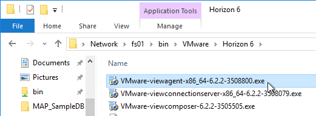
- In the Welcome to the Installation Wizard for VMware Horizon View Agent page, click Next.
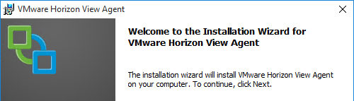
- In the License Agreement page, select I accept the terms and click Next.
- In the Network protocol configuration page, select IPv4 and click Next.
- In the Custom Setup page, if you want Scanner Redirection then enable that feature. Do the same for USB Redirection. Note: Scanner Redirection will impact host density. Click Next when done making selections.
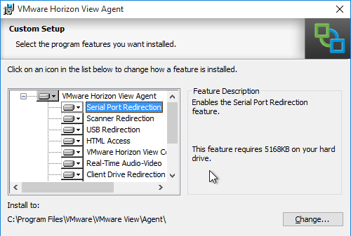
- Click OK to acknowledge the message regarding USB redirection security.
- In the Ready to Install the Program page, click Install.
- In the Installer Completed page, click Finish.
- Click Yes when asked to restart.
User Environment Manager Engine
If you are licensed for User Environment Manager (Horizon Enterprise Edition), install the User Environment Manager Engine.
- Make sure Prevent access to registry editing tools is not enabled in any GPO. This setting prevents the FlexEngine from operating properly.
- In Windows 8 and newer, open Programs and Features (right-click the Start Menu) and click Turn Windows features on or off.
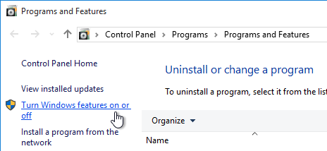
- Select .NET Framework 3.5 and click OK.
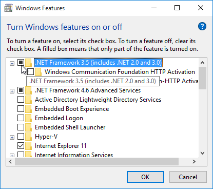
- Click Download files from Windows Update.
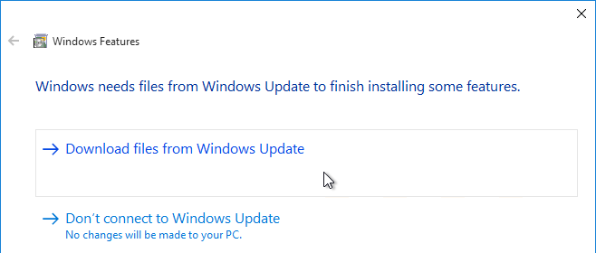
- Go to the extracted User Environment Manager 9.0 folder and run VMware User Environment Manager 9.0 x64.msi.
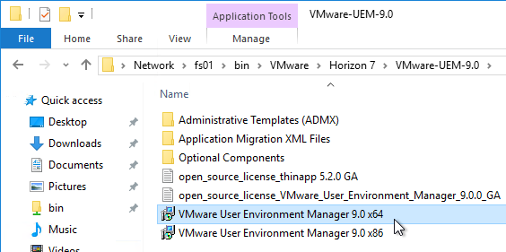
- In the Welcome to the VMware User Environment Manager Setup Wizard page, click Next.
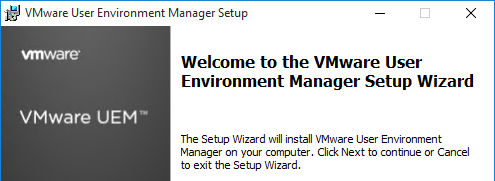
- In the End-User License Agreement page, check the box next to I accept the terms and click Next.
- In the Destination Folder page, click Next.
- The Choose Setup Type page appears. By default, the installer only installs the engine. You can click Custom or Complete to also install the console.
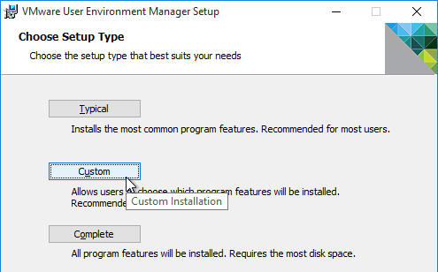
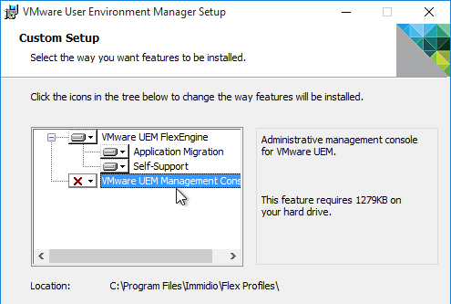
- In the Choose License File page, if installing on a View Agent then no license file is needed.
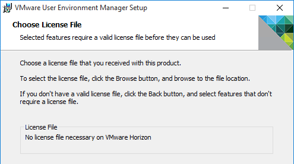
- Otherwise, Browse to the license file. Then click Next.
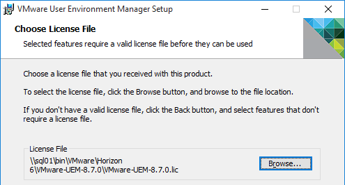
- In the Ready to install VMware User Environment Manager page, click Install.
- In the Completed the VMware User Environment Manager Setup Wizard page, click Finish.
Unity Touch
With the Unity Touch feature, tablet and smart phone users can quickly navigate to a Horizon View desktop application or file from a Unity Touch sidebar. Although end users can specify which favorite applications appear in the sidebar, for added convenience, administrators can configure a default list of favorite applications.
In the Unity Touch sidebar, the favorite applications and favorite files that users specify are stored in the user’s profile. For non-persistent pools, enable Roaming Profiles.
To set the default list of favorite applications:
- Navigate to HKLM\Software\Wow6432Node\VMware, Inc.\VMware Unity
- Create a string value called FavAppList.
- Specify the default favorite applications using format:
path-to-app-1|path-to-app-2|path-to-app-3|…. For example:
Programs/Accessories/Accessibility/Speech Recognition.lnk|Programs/VMware/VMware vSphere Client.lnk|Programs/Microsoft Office/Microsoft Office 2010 Tools/Microsoft Office 2010 Language Preferences.lnk
Unity Touch can be disabled by setting HKEY_LOCAL_MACHINE\Software\VMware,Inc.\VMware Unity\enabled to 0.
For more information, see the Feature Pack Installation and Administration guide at http://www.vmware.com/support/pubs/view_pubs.html.
Direct-Connection Plugin
If you wish to allow direct connections to the Horizon 6 Agent, install the Direct-Connection Plugin. This is not a typical configuration since it allows users to bypass the Horizon 6 Connection Servers but is useful if you need to restrict a Horizon 6 Agent to only one Horizon Client.
- Run the downloaded Direct-Connection Plugin (VMware-viewagent-direct-connection-6.2-xxx-exe.
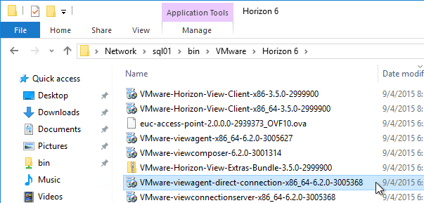
- In the Welcome to the Installation Wizard for View Agent Direct-Connection Plugin page, click Next.
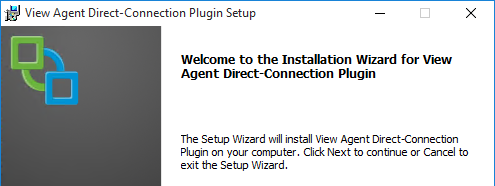
- In the End-User License Agreement page, select I accept the terms and click Next.
- In the Configuration Information page, click Next.
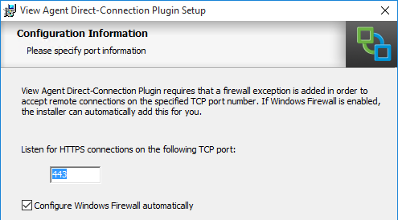
- In the Ready to install View Agent Direct-Connection Plugin page, click Install.
- In the Completed the View Agent Direct-Connection Plugin Setup Wizard page, click Finish.
- When running the Horizon Client, enter the FQDN or IP address of the Horizon 6 Agent (virtual desktop).
Composer – Rearm
By default, when View Composer creates linked clones and runs QuikPrep, one of the tasks is to rearm licensing. You can prevent this by setting the following registry key:
HKEY_LOCAL_MACHINE\SYSTEM\CurrentControlSet\services\vmware-viewcomposer-ga
SkipLicenseActivation DWORD 0x1
Dynamic PCoIP Policies
If you wish to change PCoIP Policies (e.g. clipboard redirection, client printers, etc.) based on how the user connects, see VMware Blog Post VMware Horizon View Secret Weapon. The article describes configuring VMware Horizon View Script Host service to run a script to change PCoIP configuration based on the Connection Server that the user connected through. Full script is included in the article.
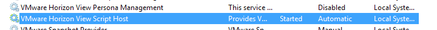
VMware OS Optimization Tool
- Download the VMware OS Optimization Tool VMware fling.
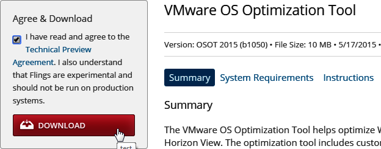
- Run the downloaded VMwareOSOptimizationTool_1050.msi.
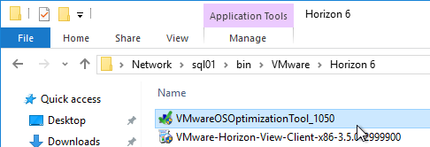
- On the Analyze tab, on the bottom left, click Analyze.
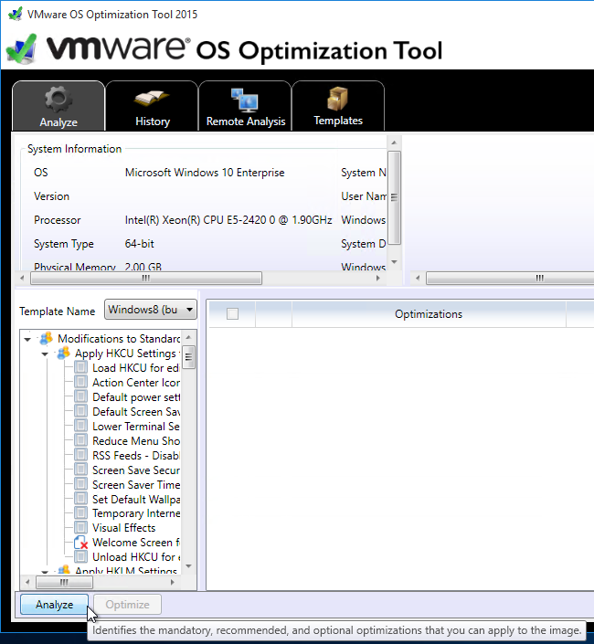
- Check both boxes and click Continue to Analyze.
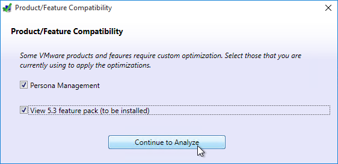
- Review the optimizations and make changes as desired. Then on the bottom left click Optimize.
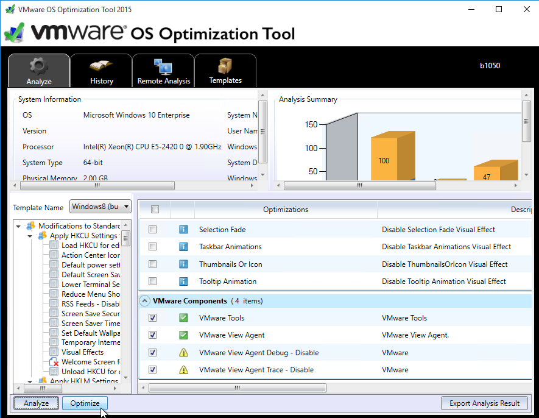
- Click the FAILED links for more information.
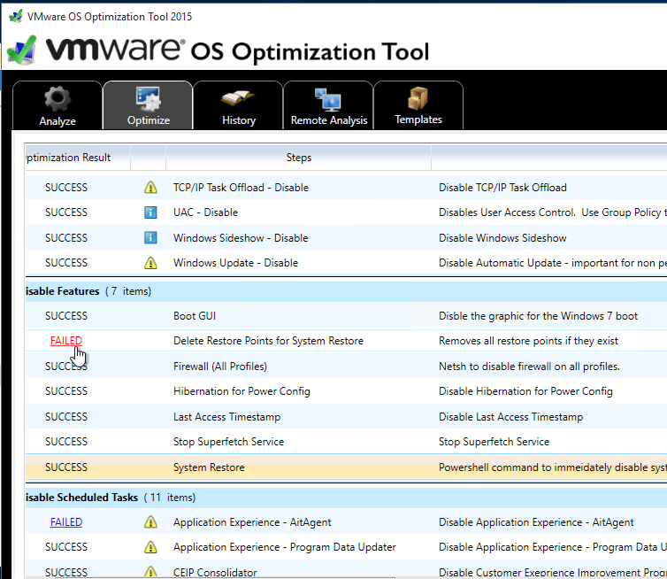
- The History tab lets you rollback the optimizations.
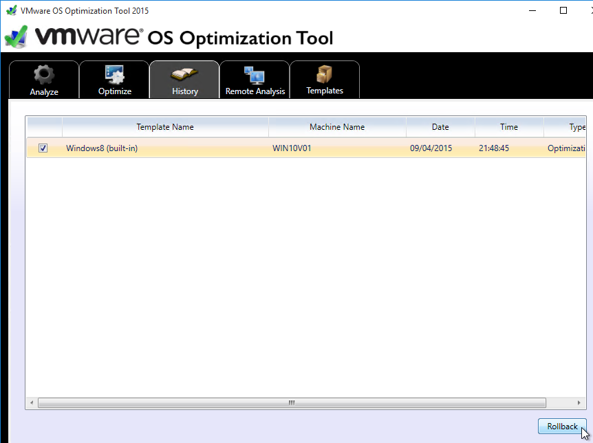
- The Templates tab lets you edit the optimizations. You can create your own template or edit an existing template.
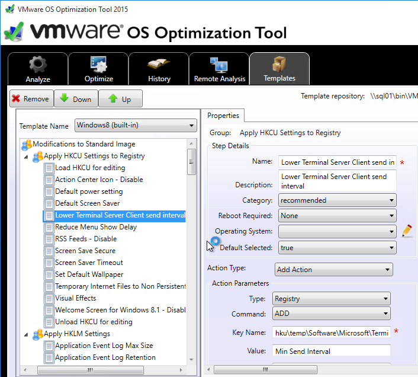
- Also see VMware 2100337 Improving log in time for floating desktops on DaaS and Horizon View for deletion of ActiveSetup registry keys that slow down 1st login. These optimizations do not appear to be included in VMware’s OS optimization tool. :idea:
Snapshot
- Make sure the master virtual desktop is configured for DHCP.

- If connected to the console, run ipconfig /release.

- Run antivirus sealing tasks:
- Symantec: Run a full scan and then run the Virtual Image Exception tool - http://www.symantec.com/business/support/index?page=content&id=TECH173650
- Symantec: run the ClientSideClonePrepTool -http://www.symantec.com/business/support/index?page=content&id=HOWTO54706
- Shutdown the master virtual desktop.

- Edit the Settings of the master virtual machine and disconnect the CD-ROM. Make sure no ISO is configured in the virtual machine.
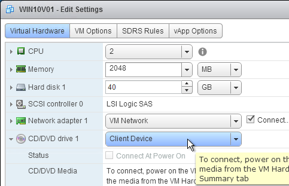
- Take a snapshot of the master virtual desktop. View Composer requires a snapshot.
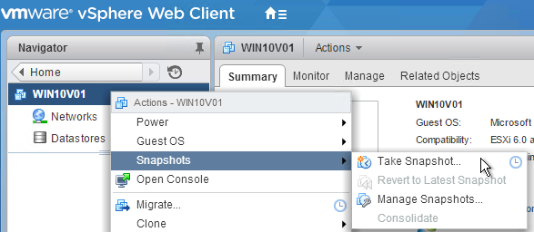
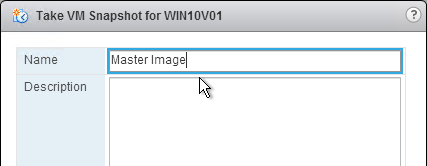
Related Pages
- Back to VMware Horizon 6